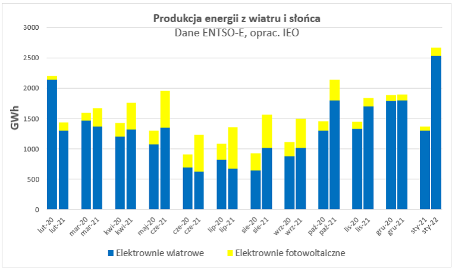

Rekord produkcji energii słonecznej w UE
W szczytowym okresie letnim 2022 roku – od maja do sierpnia – kraje Unii Europejskiej wyprodukowały 99.4 TWh energii słonecznej, co ustanowiło nowy rekord pokrycia zapotrzebowania. Oznacza to wzrost o 28% w porównaniu do poprzedniego roku. Energia ze słońca odpowiadała za 12,2% całkowitej produkcji energii elektrycznej. Tuż za nimi znalazła się energia wiatrowa (11,7%) oraz energia wodna (11%).
W 2022 roku aż 18 spośród wszystkich krajów UE pobiło swoje dotychczasowe rekordy produkcji energii ze słońca. Jednym z nich była Polska.
Polska z największym przyrostem energii ze słońca
W porównaniu do 2018 r., Polska zwiększyła produkcję energii słonecznej o 26 razy. Był to największy przyrost produkcji w całej Unii Europejskiej. Tego roku OZE radziły sobie w Polsce wyjątkowo dobrze. 19 czerwca odnawialne źródła energii dostarczyły 10 GW mocy, ustanawiając nowy rekord udziału w polskiej energetyce. Wówczas fotowoltaika wyprodukowała aż 6,2 GW. W ciągu całego okresu letniego energia z fotowoltaiki stanowiła 8,1% wyprodukowanej energii w Polsce.
Największy udział w produkcji energii słonecznej w UE miały Holandia (23%), Niemcy (19%) oraz Hiszpania (17%). To już drugi rok z rzędu, gdy Niderlandy obejmują prowadzenie, pomimo względnie niewielkiego napromieniowania.